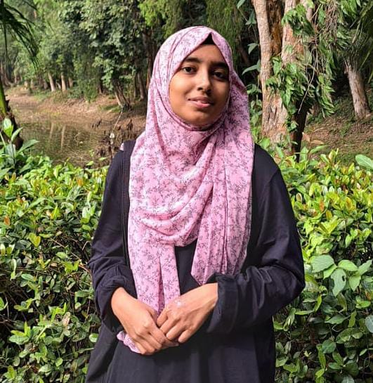

Tahmina Siddika Diya
Web Designer
Contact
tahminasiddikadiya@gmail.com
Chattogram, Bangladesh
My Skills
- Web Design
- Grapic Design
- Basic HTML-5, CSS-3
- C, C++
- MS Word, MS Exel
Human Languages
- Bangla
- English
- Hindi
Profile
Motivated and detail-oriented Computer Science Engineering undergrad with a strong foundation in software development, algorithms, and data structures. Passionate about solving complex problems and building efficient, scalable systems. Skilled in programming language C, C++,HTML-5,CSS-3 and familiar with modern technologies. Seeking to apply my knowledge in in internships or collaborative projects.
Education
- Undergrad(running) : International Islamic University Chittagong (Fourth semester)
- HSC :
Mohila College Chattogram
Year : 2021 - SSC :
Krishna Kumari City Corporation Girls High School
Year : 2019
Projects
- Online shopping Cart
The application provided a secure and user-friendly shopping experience. Used OOP to manage products, user accounts, and shopping carts with efficient data handling via a console interface. - Intelligent Traffic Control System
Developed a HTML, CSS and Javascript system to optimize traffic light signals based on real-time vehicle density, improving traffic flow and reducing congestion. Utilized data structures and algorithms for efficient traffic management.